KHO BÀI TẬP THỰC HÀNH QUAY CẢNH TRÁM TẠI LỚP (B-ROLL)
Nguyên tắc sống còn: Không bao giờ để khung hình chết dí một chỗ. Mỗi bài tập dưới đây hướng dẫn học viên băm nhỏ 1 hành động bình thường thành 5 cỡ cảnh khác nhau (MCU, CU, Macro, POV/OTS, Low angle) ngay tại bàn học, tải trọn vẹn từng trạng thái tâm lý trong video voice-over. Sau khi thành thạo, học viên có thể mang về quay lại ở các bối cảnh đời thực tương đương.
 Bài tập 01
Âu phục blazer may đo navy
Bài tập 01
Âu phục blazer may đo navy
Soi chỉ số ads & Cày bài tập trên laptop
"Đứng một chỗ bấm máy thì nhàn thật... Nhưng lười đổi góc, khung hình nó đơ ..."
Tâm lý: Áp lực & Căng thẳng tập trung
 Bài tập 02
Áo phông đen tối giản trẻ trung
Bài tập 02
Áo phông đen tối giản trẻ trung
Cuốn sổ tay & Kịch bản gạch xóa tan nát
"Cứ tưởng đặt bút xuống là có triệu view... Đến lúc ngồi viết, gạch nát cả t..."
Tâm lý: Bế tắc & Tìm tòi nội tâm
 Bài tập 03
Đồ thể thao polo navy năng động
Bài tập 03
Đồ thể thao polo navy năng động
Cầm điện thoại test góc quay tại bàn
"Bảo giơ máy lên quay thì ai cũng ngại... Sợ run tay, sợ góc xấu, sợ người t..."
Tâm lý: Quyết liệt, Thử nghiệm & Dám làm
 Bài tập 04
Sơ mi xanh nhạt xắn tay áo kiểu giảng viên
Bài tập 04
Sơ mi xanh nhạt xắn tay áo kiểu giảng viên
Ngẩng nhìn slide giảng bài & Giật mình
"Đang cắm đầu lướt điện thoại tưởng mình biết tuốt rồi... Nghe thầy nói một ..."
Tâm lý: Vỡ òa, Thức tỉnh (Aha moment)
Bài tập 05
Áo len dệt kim mỏng màu be ấm áp
Nhấp ngụm nước ấm & Tựa lưng ghế
"Quay dựng cho đã tay rồi cũng đến lúc phải ngồi lại... Nhấp ngụm nước, nhìn..."
Tâm lý: Lắng đọng, Chiêm nghiệm & Kết nối chân tình
Bài tập 06
Áo khoác denim bụi bặm
Ngón tay ngập ngừng trước nút Đăng bài
"Người lớn mình buồn cười lắm... Soạn xong kịch bản rồi, ngón tay đặt lên nú..."
Tâm lý: Do dự, Nghi ngờ & Đấu tranh nội tâm
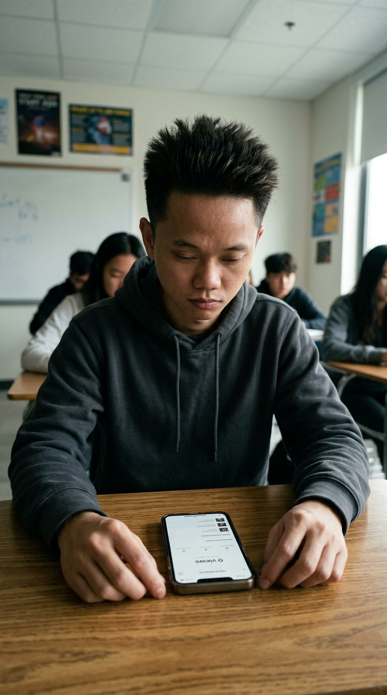
Bài tập 07 Áo hoodie xám tối giảnMở máy kiểm tra thấy 0 view, tụt mood
"Lúc mới làm, ai cũng mơ về video triệu view với nghìn đơn. Mở máy ra thấy đ..."
Tâm lý: Hụt hẫng, Thất vọng & Va vào thực tế
Bài tập 08
Áo sơ mi kẻ caro nhã nhặn
Ting ting thông báo tin nhắn & Đơn đầu tiên
"Tiếng ting ting nổ tin nhắn đầu tiên... giá trị nó chẳng đáng bao nhiêu tiề..."
Tâm lý: Tự hào, Nhẹ nhõm & Quả ngọt đầu tiên
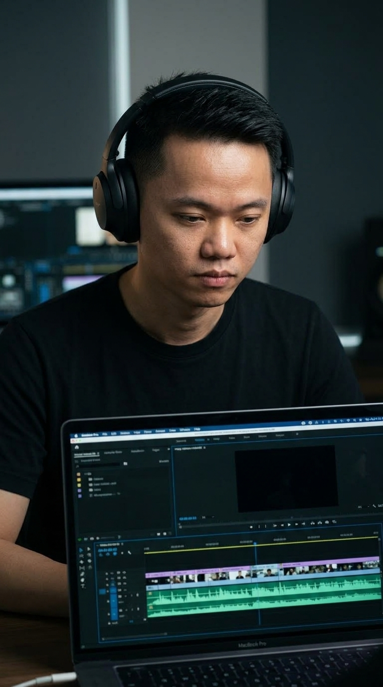
Bài tập 09 Áo thun đen tối giản + Tai nghe over-earĐeo tai nghe soi timeline CapCut cắt gọt
"Cắt đi nửa giây thừa, kéo lại một nhịp thở... Người xem không biết bạn tỉ m..."
Tâm lý: Tỉ mỉ, Cầu toàn & Tận tâm kỹ thuật
Bài tập 10
Áo blazer linen trẻ trung
Chụm đầu tranh luận kịch bản với bạn học
"Ngồi một mình thì tưởng ý tưởng của mình là nhất. Đến lúc đem ra bàn luận v..."
Tâm lý: Va chạm quan điểm & Tinh thần đồng đội
 Bài tập 11
Áo sơ mi trắng cổ bẻ lịch thiệp
Bài tập 11
Áo sơ mi trắng cổ bẻ lịch thiệp
Đứng trước lớp tập nói đúp quay đầu tiên
"Đứng trước ống kính mà run như cầy sấy thì ai cũng từng trải qua. Nhưng nuố..."
Tâm lý: Vượt qua nỗi sợ & Can đảm trước đám đông
Bài tập 12
Áo gió thể thao / Bomber jacket năng động
Gập laptop, đeo balo bước ra khỏi lớp
"Học xong một buổi, đầu nảy số hàng tá ý tưởng. Gập máy lại, bước ra khỏi ph..."
Tâm lý: Giải phóng, Tự tin & Sẵn sàng thực chiến
Bài tập 01 • Lời thoại Voice-Over ngầm
"Đứng một chỗ bấm máy thì nhàn thật... Nhưng lười đổi góc, khung hình nó đơ ra... thì đến mình xem lại còn muốn lướt, trách gì người ta! 😄"
🧠 BẢN ĐỒ TÂM LÝ HỌC (BÀI TẬP 01)
Áp lực & Căng thẳng tập trung
Trang phục: Âu phục blazer may đo navy
Tầng 1 • Nói đãi bôi
"Em đi học quay dựng là để làm video triệu view, học kỹ thuật điện ảnh cao siêu."
Lý do bề nổi: cái cớ an toàn ai cũng nói được.
Tầng 2 • Cảm giác thật
"Cầm điện thoại lên quay bạn học thì lóng ngóng, chân chôn chặt một chỗ, bấm 10 giây cho xong."
Hành vi thật: thao tác lúng túng đời thường.
Tầng 2.5 • Thể diện người lớn
"Biết thừa khung hình đang chết dí một chỗ... nhưng ngại cúi thấp, sợ bạn bè bảo làm màu."
Điểm nghẽn thể diện: sợ người ngoài chê cười, làm màu.
Tầng 3 • Tim đen ngượng miệng
"Sự thật ngượng miệng: cái video mình còn chán ngấy thì ai dừng lại xem."
Sự thật giấu kín: nỗi sợ và điểm nghẽn thực sự.
🎬 CHI TIẾT 5 CÚ MÁY BĂM NHỎ (BÀI TẬP 01)
Bấm vào ảnh để phóng to chi tiết Trung cận (MCU)
00:00 - 02.5s
Trung cận (MCU)
00:00 - 02.5s
1. Thiết lập áp lực bài tập
🎙️ "Đứng một chỗ bấm máy thì nhàn thật..."
| Cỡ cảnh: | Trung cận (MCU) |
| Góc máy: | Ngang tầm mắt (0°) |
| Hướng: | Chếch 45° bên hông trái |
💡 Ngồi ké bên cạnh bàn, đưa máy ngang tầm mắt cách một sải tay. Khóa nét tròng kính, lấy ánh sáng xanh màn hình hắt nhẹ lên mặt.
 Cận cảnh (CU)
02.5s - 04.5s
Cận cảnh (CU)
02.5s - 04.5s
2. Ánh mắt nhíu mày sốt ruột
🎙️ "...bấm một cái là xong."
| Cỡ cảnh: | Cận cảnh (CU) |
| Góc máy: | Hất nhẹ 15° từ dưới lên |
| Hướng: | Chính diện xuyên mép laptop |
💡 Bước sang đối diện, hạ máy ngang mép trên màn hình laptop. Canh đúng lúc bạn nhíu mày nhìn số liệu thì bấm máy, biểu cảm thật này không diễn được đâu.
 Đặc tả (Macro ECU)
04.5s - 07.0s
Đặc tả (Macro ECU)
04.5s - 07.0s
3. Bàn phím nhấn lì nút xóa
🎙️ "Nhưng lười dịch cái chân, để khung hình đơ ra..."
| Cỡ cảnh: | Đặc tả (Macro ECU) |
| Góc máy: | Góc cao 60° chúc xuống |
| Hướng: | Từ trên xuống chếch phải |
💡 Đưa camera sát bàn phím một gang tay, bật zoom 2x chống bóng lưng. Bắt trọn ngón tay nhấn lì nút Backspace xóa dòng chữ vừa gõ — chi tiết bế tắc đắt giá nhất.
 Cận qua vai (OTS)
07.0s - 09.5s
Cận qua vai (OTS)
07.0s - 09.5s
4. Soi màn hình số liệu đỏ lòm
🎙️ "...thì video dựng lên..."
| Cỡ cảnh: | Cận qua vai (OTS) |
| Góc máy: | Ngang vai cao 20° |
| Hướng: | Sau lưng chếch vai phải |
💡 Đứng chếch sau vai phải, ghé camera qua khe giữa cổ và vai áo. Lấy nét căng vào đồ thị đỏ lòm trên màn hình, tạo cảm giác nhìn lén vào áp lực thật.
 Cận góc thấp (Low ECU)
09.5s - 12.0s
Cận góc thấp (Low ECU)
09.5s - 12.0s
5. Cuộn chuột & Thở dài nhẹ nhõm
🎙️ "...đến mình xem lại còn lướt vội, trách gì người ta! 😄"
| Cỡ cảnh: | Cận góc thấp (Low ECU) |
| Góc máy: | Sát mặt bàn (0°) |
| Hướng: | Ngang mặt bàn bên phải |
💡 Đặt cạnh dưới điện thoại chạm hẳn xuống mặt bàn gỗ làm tiền cảnh. Nhắc bạn ngả người ra ghế thở hắt một hơi, kết thúc cú máy tự nhiên nhẹ nhõm.
📍 3 Gợi Ý Bối Cảnh Quay Lại Ngoài Lớp Học:
- Bàn làm việc tại nhà ban đêm: Chỉ bật đúng 1 bóng đèn bàn, xung quanh phòng tối om, trên bàn có cốc nước đá tan chảy hết.
- Quầy thu ngân cửa hàng / kho hàng: Đứng giữa đống thùng carton, tay cầm tập hóa đơn đối soát với màn hình máy POS.
- Trên xe ô tô dừng bên lề đường: Một tay cầm vô lăng, một tay cầm điện thoại lướt xem báo cáo doanh thu dưới ánh đèn đường vàng vọt.
Bài tập 02 • Lời thoại Voice-Over ngầm
"Cứ tưởng đặt bút xuống là có triệu view... Đến lúc ngồi viết, gạch nát cả trang giấy... mới thấm câu: Viết cho hay thì khó, chứ viết văn mẫu thì ai cũng làm được!"
🧠 BẢN ĐỒ TÂM LÝ HỌC (BÀI TẬP 02)
Bế tắc & Tìm tòi nội tâm
Trang phục: Áo phông đen tối giản trẻ trung
Tầng 1 • Nói đãi bôi
"Em có nhiều ý tưởng lớn lắm, chỉ cần ngồi xuống là viết được kịch bản hay ngay."
Lý do bề nổi: cái cớ an toàn ai cũng nói được.
Tầng 2 • Cảm giác thật
"Cầm bút lên viết được 2 câu thì bí từ, gạch xoẹt xoẹt rồi vò đầu bứt tai, trang giấy lem luốc."
Hành vi thật: thao tác lúng túng đời thường.
Tầng 2.5 • Thể diện người lớn
"Sợ bạn bè bên cạnh thấy mình ngồi cả buổi không viết nổi một câu ra hồn, nên vờ viết nguệch ngoạc để giữ thể diện."
Điểm nghẽn thể diện: sợ người ngoài chê cười, làm màu.
Tầng 3 • Tim đen ngượng miệng
"Sự thật ngượng miệng: trong đầu rỗng tuếch, toàn nhai lại văn mẫu trên mạng nên không thể tự viết được câu nào chạm vào lòng người."
Sự thật giấu kín: nỗi sợ và điểm nghẽn thực sự.
🎬 CHI TIẾT 5 CÚ MÁY BĂM NHỎ (BÀI TẬP 02)
Bấm vào ảnh để phóng to chi tiết Trung cận (MCU)
00:00 - 02.5s
Trung cận (MCU)
00:00 - 02.5s
1. Trung cảnh ngồi đăm chiêu bên sổ
🎙️ "Cứ tưởng đặt bút xuống là có triệu view..."
| Cỡ cảnh: | Trung cận (MCU) |
| Góc máy: | Ngang tầm mắt (0°) |
| Hướng: | Chếch 30° bên phải |
💡 Đặt máy ngang mép bàn bên phải, bắt trọn dáng ngồi hơi gù lưng của bạn học, mắt nhìn chằm chằm trang giấy trắng.
 Cận cảnh (CU)
02.5s - 04.5s
Cận cảnh (CU)
02.5s - 04.5s
2. Đầu bút bi gõ nhịp xuống mặt bàn
🎙️ "...Đến lúc ngồi viết..."
| Cỡ cảnh: | Cận cảnh (CU) |
| Góc máy: | Ngang mặt bàn 15° |
| Hướng: | Chính diện ngón tay |
💡 Dí máy sát tay cầm bút một gang tay, lấy nét vào đầu bút bi đang gõ cộc cộc xuống mặt gỗ theo nhịp bối rối vô thức.
 Đặc tả (Macro ECU)
04.5s - 07.0s
Đặc tả (Macro ECU)
04.5s - 07.0s
3. Ngòi bút gạch nát chữ Triệu View
🎙️ "...gạch nát cả trang giấy..."
| Cỡ cảnh: | Đặc tả (Macro ECU) |
| Góc máy: | Góc cao 70° chúc xuống |
| Hướng: | Thẳng đứng trên trang sổ |
💡 Chĩa máy từ trên cao chúc xuống, zoom 2x bắt nét vết mực gạch chéo dứt khoát đè lên dòng chữ kịch bản vừa viết dở.
 Góc qua vai (OTS)
07.0s - 09.5s
Góc qua vai (OTS)
07.0s - 09.5s
4. Liếc trộm trang sổ của bạn bên cạnh
🎙️ "...mới thấm câu: Viết cho hay thì khó..."
| Cỡ cảnh: | Góc qua vai (OTS) |
| Góc máy: | Cao ngang vai 25° |
| Hướng: | Từ sau lưng nhìn chéo sang |
💡 Đặt camera sau gáy bạn bên phải, lia chậm từ trang giấy lem luốc sang trang vở ngay ngắn của bạn ngồi kế bên.
 Góc thấp (Low Angle)
09.5s - 12.0s
Góc thấp (Low Angle)
09.5s - 12.0s
5. Ném bút tựa lưng cười trừ bất lực
🎙️ "...chứ viết văn mẫu thì ai cũng làm được! 😄"
| Cỡ cảnh: | Góc thấp (Low Angle) |
| Góc máy: | Sát mặt bàn hất lên 20° |
| Hướng: | Chính diện khuôn mặt |
💡 Máy đặt nằm trên mặt bàn, bắt cú buông rơi cây bút xuống sổ và nụ cười tự trào mộc mạc khi nhận ra mình đang bị kẹt văn mẫu.
📍 3 Gợi Ý Bối Cảnh Quay Lại Ngoài Lớp Học:
- Bàn góc khuất quán cà phê: Ngồi trước cuốn sổ da mở sẵn, nhìn dòng người đi lại qua ô cửa kính mà không viết nổi một chữ.
- Phòng làm việc cá nhân ban đêm: Giấy nháp vo tròn vứt rải rác dưới chân ghế, ngồi gục trán vào hai bàn tay mỏi mệt.
- Bồn rửa mặt soi gương: Vốc một vốc nước lạnh lên mặt, ngẩng lên nhìn thẳng vào bóng mình trong gương với ánh mắt tự vấn.
Bài tập 03 • Lời thoại Voice-Over ngầm
"Bảo giơ máy lên quay thì ai cũng ngại... Sợ run tay, sợ góc xấu, sợ người ta nhìn làm màu. Nhưng cứ bấm thử một đúp xem... xấu cũng được, miễn là mình dám bấm nút REC!"
🧠 BẢN ĐỒ TÂM LÝ HỌC (BÀI TẬP 03)
Quyết liệt, Thử nghiệm & Dám làm
Trang phục: Đồ thể thao polo navy năng động
Tầng 1 • Nói đãi bôi
"Phải có máy xịn, phòng cách âm và kịch bản hoàn hảo thì em mới dám bấm máy quay."
Lý do bề nổi: cái cớ an toàn ai cũng nói được.
Tầng 2 • Cảm giác thật
"Cầm điện thoại lên quay thử thì ngượng ngùng, tay run run, mắt liếc quanh xem có ai dòm ngó mình không."
Hành vi thật: thao tác lúng túng đời thường.
Tầng 2.5 • Thể diện người lớn
"Lấy cớ thiết bị chưa đủ tốt để che giấu nỗi sợ bị người khác đánh giá là vụng về, làm màu khi quay video."
Điểm nghẽn thể diện: sợ người ngoài chê cười, làm màu.
Tầng 3 • Tim đen ngượng miệng
"Sự thật ngượng miệng: sự cầu toàn chỉ là cái cớ che đậy cho thói lười biếng và nỗi sợ thất bại ngay từ bước đầu tiên."
Sự thật giấu kín: nỗi sợ và điểm nghẽn thực sự.
🎬 CHI TIẾT 5 CÚ MÁY BĂM NHỎ (BÀI TẬP 03)
Bấm vào ảnh để phóng to chi tiết Trung cận (MCU)
00:00 - 02.5s
Trung cận (MCU)
00:00 - 02.5s
1. Xoay điện thoại ngắm khung hình
🎙️ "Bảo giơ máy lên quay thì ai cũng ngại..."
| Cỡ cảnh: | Trung cận (MCU) |
| Góc máy: | Ngang ngực 0° |
| Hướng: | Chếch 30° trực diện |
💡 Quay góc ngang ngực, bắt cử chỉ hai tay cầm điện thoại xoay ngang xoay dọc tìm góc máy chuẩn trong lớp học.
 Cận cảnh (CU)
02.5s - 04.5s
Cận cảnh (CU)
02.5s - 04.5s
2. Ngón tay chạm dứt khoát nút REC đỏ
🎙️ "...sợ run tay, sợ góc xấu, sợ người ta nhìn."
| Cỡ cảnh: | Cận cảnh (CU) |
| Góc máy: | Ngang màn hình 20° |
| Hướng: | Chính diện ngón cái |
💡 Dí sát vào ngón tay cái tiếp xúc với màn hình cảm ứng, bắt trọn khoảnh khắc nút REC đỏ chuyển sang đếm giây 00:01.
 Đặc tả (Macro ECU)
04.5s - 07.0s
Đặc tả (Macro ECU)
04.5s - 07.0s
3. Đặc tả cụm 3 camera phản chiếu đèn
🎙️ "Nhưng cứ bấm thử một đúp xem..."
| Cỡ cảnh: | Đặc tả (Macro ECU) |
| Góc máy: | Ngang lưng máy |
| Hướng: | Chĩa thẳng ống kính |
💡 Chĩa thẳng vào cụm camera sau lưng điện thoại, lấy nét căng bóng đèn tuýp lớp học phản chiếu trong tròng kính máy ảnh.
 Góc nhìn chủ quan (POV)
07.0s - 09.5s
Góc nhìn chủ quan (POV)
07.0s - 09.5s
4. Màn hình POV quay bạn học cười ngượng
🎙️ "...xấu cũng được..."
| Cỡ cảnh: | Góc nhìn chủ quan (POV) |
| Góc máy: | Ngang tầm mắt |
| Hướng: | Khung hình điện thoại |
💡 Góc nhìn từ người quay, thấy rõ màn hình điện thoại đang bắt nét vào bạn học đối diện đang lấy tay che miệng cười ngượng.
 Góc thấp (Low Angle)
09.5s - 12.0s
Góc thấp (Low Angle)
09.5s - 12.0s
5. Hạ máy vẫy tay cười động viên
🎙️ "...miễn là mình dám bấm nút REC! 🎬"
| Cỡ cảnh: | Góc thấp (Low Angle) |
| Góc máy: | Mặt bàn hất lên 25° |
| Hướng: | Chính diện người quay |
💡 Đặt máy sát mặt bàn nhìn lên, bắt nụ cười rạng rỡ và bàn tay vẫy nhẹ ra hiệu: 'Được rồi đấy, đúp này tự nhiên lắm!'
📍 3 Gợi Ý Bối Cảnh Quay Lại Ngoài Lớp Học:
- Phòng khách tại nhà: Tự tay xoay ốc vặn chiếc chân máy tripod, gắn kẹp điện thoại và bấm nút đếm ngược 3-2-1.
- Ban công ngập nắng: Cầm sản phẩm trên tay xoay tròn trước ống kính dưới ánh nắng tự nhiên buổi sáng.
- Góc phố đi bộ / quán ăn: Đứng giữa dòng người, tự tin cầm điện thoại quay món ăn bốc khói mà không sợ ai nhìn ngó.
Bài tập 04 • Lời thoại Voice-Over ngầm
"Đang cắm đầu lướt điện thoại tưởng mình biết tuốt rồi... Nghe thầy nói một câu chạm đúng tim đen mà giật thót cả mình! Ghi vội lại... chứ không mai lại đâu đóng đấy!"
🧠 BẢN ĐỒ TÂM LÝ HỌC (BÀI TẬP 04)
Vỡ òa, Thức tỉnh (Aha moment)
Trang phục: Sơ mi xanh nhạt xắn tay áo kiểu giảng viên
Tầng 1 • Nói đãi bôi
"Mấy kiến thức này trên mạng đầy, lướt video 30 giây là hiểu hết rồi cần gì học sâu."
Lý do bề nổi: cái cớ an toàn ai cũng nói được.
Tầng 2 • Cảm giác thật
"Ngồi trong lớp nhưng cắm đầu lướt feed mạng xã hội dưới gầm bàn, mắt đảo liên tục."
Hành vi thật: thao tác lúng túng đời thường.
Tầng 2.5 • Thể diện người lớn
"Giả vờ cúi đầu bấm máy như đang bận việc quan trọng, thực chất là không theo kịp bài giảng nhưng sợ hỏi lại bị chê dốt."
Điểm nghẽn thể diện: sợ người ngoài chê cười, làm màu.
Tầng 3 • Tim đen ngượng miệng
"Sự thật ngượng miệng: cái tôi quá lớn, tưởng mình giỏi hơn người khác. Đến khi bị bóc trần đúng điểm nghẽn mới thấy mình đang tự lừa dối bản thân."
Sự thật giấu kín: nỗi sợ và điểm nghẽn thực sự.
🎬 CHI TIẾT 5 CÚ MÁY BĂM NHỎ (BÀI TẬP 04)
Bấm vào ảnh để phóng to chi tiết Trung cận (MCU)
00:00 - 02.5s
Trung cận (MCU)
00:00 - 02.5s
1. Cúi đầu lướt feed dưới gầm bàn
🎙️ "Đang cắm đầu lướt điện thoại tưởng mình biết tuốt rồi..."
| Cỡ cảnh: | Trung cận (MCU) |
| Góc máy: | Góc chúc 35° xuống |
| Hướng: | Chếch phải 45° |
💡 Quay góc từ trên chúc xuống, thấy nửa người và mép điện thoại đang được lướt giấu dưới ngăn bàn học.
 Cận cảnh (CU)
02.5s - 04.5s
Cận cảnh (CU)
02.5s - 04.5s
2. Ngón tay cuộn lướt bỗng khựng đơ
🎙️ "...nghe thầy nói một câu chạm đúng tim đen..."
| Cỡ cảnh: | Cận cảnh (CU) |
| Góc máy: | Ngang mép bàn |
| Hướng: | Chính diện màn hình |
💡 Cận cảnh ngón tay đang vuốt nhanh bỗng dừng khựng lại bất động, ánh sáng trắng của app hắt lên ngón tay.
 Cận góc thấp (Low CU)
04.5s - 07.0s
Cận góc thấp (Low CU)
04.5s - 07.0s
3. Ngẩng phắt nhìn slide giật thót mình
🎙️ "...giật thót cả mình!"
| Cỡ cảnh: | Cận góc thấp (Low CU) |
| Góc máy: | Hất lên 30° từ bàn |
| Hướng: | Chếch trái nhìn bảng |
💡 Máy đặt sát mặt bàn hất lên, bắt trọn biểu cảm mắt mở to, lông mày nhướn lên ngơ ngác khi vừa nghe một câu đâm trúng tim đen.
 Đặc tả (Macro ECU)
07.0s - 09.5s
Đặc tả (Macro ECU)
07.0s - 09.5s
4. Hí hoáy gạch chân từ khóa vào sổ
🎙️ "Ghi vội lại..."
| Cỡ cảnh: | Đặc tả (Macro ECU) |
| Góc máy: | Góc cao 80° thẳng đứng |
| Hướng: | Ngòi bút trên trang vở |
💡 Góc nhìn từ trên xuống ngòi bút lia nhanh 2 nét gạch chân thật đậm dưới từ khóa 'LEARN FROM FAILURE' vừa ghi vội.
 Trung cận (MCU)
09.5s - 12.0s
Trung cận (MCU)
09.5s - 12.0s
5. Gật gù cười trừ cất hẳn điện thoại
🎙️ "...chứ không mai lại đâu đóng đấy! 💡"
| Cỡ cảnh: | Trung cận (MCU) |
| Góc máy: | Ngang tầm mắt |
| Hướng: | Chếch nghiêng 30° |
💡 Ngang tầm mắt, bắt cử chỉ gật đầu cười thấu suốt một mình, cất hẳn chiếc điện thoại vào balo và ngồi thẳng thớm nghe giảng.
📍 3 Gợi Ý Bối Cảnh Quay Lại Ngoài Lớp Học:
- Đang lật mở trang sách cũ: Ngón tay lật trang sách bỗng khựng lại ở một câu trích dẫn in đậm, mắt sáng bừng lên.
- Đi dạo ngoài công viên: Bỗng dừng bước đứng khựng lại bên vỉa hè, rút vội điện thoại bật ghi âm lưu lại ý tưởng vừa nảy ra.
- Bàn làm việc văn phòng: Đang lục chồng tài liệu cũ, rút phắt ra bản kế hoạch năm ngoái và vỗ đùi đánh đét.
Bài tập 05 • Lời thoại Voice-Over ngầm
"Quay dựng cho đã tay rồi cũng đến lúc phải ngồi lại... Nhấp ngụm nước, nhìn lại những thước phim vụng về đầu tiên. Làm video không phải để chứng tỏ mình tài giỏi, mà là để tìm thấy những người bạn cùng tần số."
🧠 BẢN ĐỒ TÂM LÝ HỌC (BÀI TẬP 05)
Lắng đọng, Chiêm nghiệm & Kết nối chân tình
Trang phục: Áo len dệt kim mỏng màu be ấm áp
Tầng 1 • Nói đãi bôi
"Làm video là cỗ máy kiếm tiền tự động, chỉ cần tối ưu hóa chuyển đổi và phễu bán hàng."
Lý do bề nổi: cái cớ an toàn ai cũng nói được.
Tầng 2 • Cảm giác thật
"Quay xong thì mệt rã rời, ngồi một góc phòng học vắng, nhấp từng ngụm nước cho đỡ khản giọng."
Hành vi thật: thao tác lúng túng đời thường.
Tầng 2.5 • Thể diện người lớn
"Gồng mình tỏ ra chuyên nghiệp suốt buổi học, đến khi mọi người về bớt mới dám thở phào, cởi bỏ chiếc mặt nạ gồng gánh."
Điểm nghẽn thể diện: sợ người ngoài chê cười, làm màu.
Tầng 3 • Tim đen ngượng miệng
"Sự thật ngượng miệng: sâu thẳm trong lòng sợ nhất là cảm giác cô đơn, làm video nhiều view mà chẳng có ai thật lòng hiểu mình."
Sự thật giấu kín: nỗi sợ và điểm nghẽn thực sự.
🎬 CHI TIẾT 5 CÚ MÁY BĂM NHỎ (BÀI TẬP 05)
Bấm vào ảnh để phóng to chi tiết
Trung cảnh (MCU)
00:00 - 02.5s
1. Ngồi tựa lưng ghế bên khung cửa sổ
🎙️ "Quay dựng cho đã tay rồi cũng đến lúc phải ngồi lại..."
| Cỡ cảnh: | Trung cảnh (MCU) |
| Góc máy: | Ngang ngực 0° |
| Hướng: | Chếch 30° đón nắng |
💡 Bắt trọn dáng ngồi thư thái của anh Việt trong chiếc áo len be, nắng chiều rọi xiên vào khung cửa sổ ấm áp.
Cận cảnh (CU)
02.5s - 04.5s
2. Hai bàn tay ôm trọn cốc nước ấm
🎙️ "...Nhấp ngụm nước, nhìn lại những thước phim vụng về đầu tiên."
| Cỡ cảnh: | Cận cảnh (CU) |
| Góc máy: | Ngang mặt bàn |
| Hướng: | Chính diện hai tay |
💡 Dí sát camera bắt hai bàn tay đang ủ ấm quanh chiếc cốc giấy, những ngón tay khẽ miết nhẹ thân cốc thong thả.
Đặc tả (Macro ECU)
04.5s - 07.0s
3. Đặc tả miệng cốc nước bốc hơi nhẹ
🎙️ "Làm video không phải để chứng tỏ mình tài giỏi..."
| Cỡ cảnh: | Đặc tả (Macro ECU) |
| Góc máy: | Ngang miệng cốc |
| Hướng: | Chếch ngược sáng |
💡 Lấy nét căng vào làn khói mỏng bốc lên từ miệng cốc dưới vệt nắng chiều, tạo điểm dừng thị giác êm đềm.
Góc nhìn rộng (Wide OTS)
07.0s - 09.5s
4. Khung cảnh lớp học dần vắng người
🎙️ "...mà là để tìm thấy những người bạn..."
| Cỡ cảnh: | Góc nhìn rộng (Wide OTS) |
| Góc máy: | Ngang vai |
| Hướng: | Hướng ra dãy bàn ghế |
💡 Góc nhìn từ sau lưng nhân vật nhìn bao quát không gian phòng học sau giờ tan lớp, bàn ghế ngay ngắn tĩnh lặng.
Cận cảnh khuôn mặt (CU)
09.5s - 12.0s
5. Nụ cười nhẹ nhõm bình an nhìn thẳng
🎙️ "...cùng tần số với mình! ☕"
| Cỡ cảnh: | Cận cảnh khuôn mặt (CU) |
| Góc máy: | Ngang tầm mắt |
| Hướng: | Chính diện ống kính |
💡 Bắt trọn nụ cười mộc mạc không phòng thủ, ánh mắt chân thành như đang ngồi đối diện trò chuyện cùng một người bạn tri kỷ.
📍 3 Gợi Ý Bối Cảnh Quay Lại Ngoài Lớp Học:
- Ban công chung cư lúc hoàng hôn: Ngồi tựa ghế mây, hai tay cầm tách trà nóng nhìn dòng xe cộ phía dưới, gió thổi nhẹ vạt áo.
- Bàn ăn gia đình buổi tối: Sau khi dọn dẹp bát đĩa xong, ngồi tựa vào ghế nhâm nhi một tách trà thảo mộc bên ngọn đèn trần ấm áp.
- Ghế đá công viên sáng sớm: Ngồi một mình thong thả hít thở không khí trong lành dưới tán cây xanh mát, gác lại mọi âu lo.
Bài tập 06 • Lời thoại Voice-Over ngầm
"Người lớn mình buồn cười lắm... Soạn xong kịch bản rồi, ngón tay đặt lên nút Đăng thì cứ run lên vì sợ: 'Liệu người ta có chê mình làm trò không?'. Không bấm thì an toàn thật, nhưng sẽ mãi đứng nguyên một chỗ!"
🧠 BẢN ĐỒ TÂM LÝ HỌC (BÀI TẬP 06)
Do dự, Nghi ngờ & Đấu tranh nội tâm
Trang phục: Áo khoác denim bụi bặm
Tầng 1 • Nói đãi bôi
"Em là người kỹ tính, em chưa đăng vì muốn chuẩn bị thêm vài tài liệu nữa cho nó chu toàn."
Lý do bề nổi: cái cớ an toàn ai cũng nói được.
Tầng 2 • Cảm giác thật
"Màn hình đã load sẵn nút Xuất bản màu xanh, nhưng ngón tay cứ giơ lên rồi lại hạ xuống cả chục lần."
Hành vi thật: thao tác lúng túng đời thường.
Tầng 2.5 • Thể diện người lớn
"Sợ bạn bè cùng trang lứa, đồng nghiệp cũ nhìn thấy mình làm video rồi xì xào bàn tán: 'Dạo này rảnh rỗi bày đặt lên mạng dạy đời'."
Điểm nghẽn thể diện: sợ người ngoài chê cười, làm màu.
Tầng 3 • Tim đen ngượng miệng
"Sự thật ngượng miệng: lòng tự ái quá lớn, sợ nhận về sự thờ ơ hoặc vài ba lời bình luận châm chọc khiến mình bị bẽ mặt."
Sự thật giấu kín: nỗi sợ và điểm nghẽn thực sự.
🎬 CHI TIẾT 5 CÚ MÁY BĂM NHỎ (BÀI TẬP 06)
Bấm vào ảnh để phóng to chi tiết Trung cận (MCU)
00:00 - 02.5s
Trung cận (MCU)
00:00 - 02.5s
1. Ngồi trầm ngâm cầm điện thoại hai tay
🎙️ "Người lớn mình buồn cười lắm..."
| Cỡ cảnh: | Trung cận (MCU) |
| Góc máy: | Ngang tầm mắt |
| Hướng: | Chếch 35° bên trái |
💡 Bắt trọn ánh mắt đăm chiêu giằng xé của anh Việt trong chiếc áo khoác denim, hai tay nâng điện thoại sát mặt bàn.
Cận cảnh (CU)
02.5s - 04.5s
2. Ngón tay trỏ ngập ngừng cách nút Đăng 1mm
🎙️ "...Soạn xong kịch bản rồi, ngón tay đặt lên nút Đăng..."
| Cỡ cảnh: | Cận cảnh (CU) |
| Góc máy: | Ngang màn hình |
| Hướng: | Chính diện ngón trỏ |
💡 Dí sát vào ngón tay đang run nhẹ, nhấp nhả 2 nhịp ngay trên nút bấm màu xanh nhưng không dám chạm xuống.
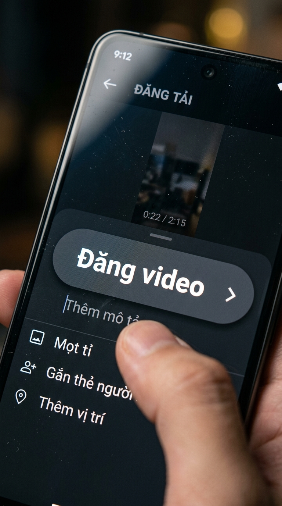
Đặc tả (Macro ECU) 04.5s - 07.0s3. Đặc tả nút Đăng nhấp nháy trên màn hình
🎙️ "...thì cứ run lên vì sợ: 'Liệu người ta có chê mình làm trò không?'"
| Cỡ cảnh: | Đặc tả (Macro ECU) |
| Góc máy: | Thẳng đứng màn hình |
| Hướng: | Cận cảnh giao diện |
💡 Khóa nét vào chữ 'Đăng video' sắc nét trên giao diện ứng dụng, tạo cảm giác nghẹt thở của khoảnh khắc quyết định.
Góc nhìn môi trường (OTS)
07.0s - 09.5s
4. Liếc mắt nhìn quanh phòng học
🎙️ "Không bấm thì an toàn thật..."
| Cỡ cảnh: | Góc nhìn môi trường (OTS) |
| Góc máy: | Ngang cằm |
| Hướng: | Quét sang bạn bè |
💡 Góc nhìn từ sau lưng liếc nhẹ sang những bạn học xung quanh đang trò chuyện, phản ánh nỗi sợ bị dòm ngó.
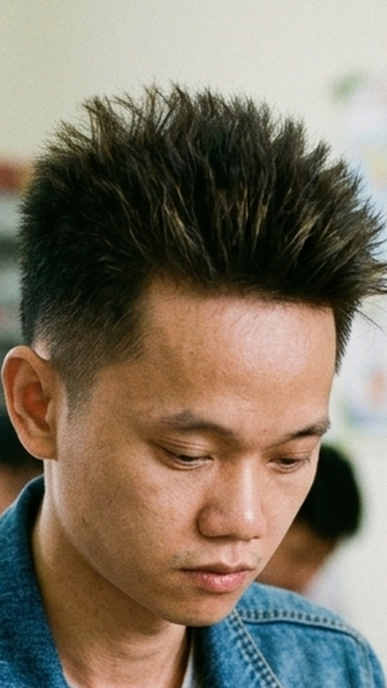
Góc thấp (Low Angle) 09.5s - 12.0s5. Hạ máy úp màn hình xuống mặt bàn
🎙️ "...nhưng sẽ mãi đứng nguyên một chỗ!"
| Cỡ cảnh: | Góc thấp (Low Angle) |
| Góc máy: | Mặt bàn hất lên 15° |
| Hướng: | Chính diện khuôn mặt |
💡 Úp mạnh chiếc điện thoại xuống mặt bàn gỗ cạch một cái, ngẩng mặt lên thở dài tự vấn: 'Rốt cuộc mình đang sợ cái gì?'
📍 3 Gợi Ý Bối Cảnh Quay Lại Ngoài Lớp Học:
- Trước cửa phòng họp công ty: Tay cầm tập hồ sơ đưa lên định gõ cửa gặp sếp đề xuất ý tưởng mới rồi lại rụt tay xuống chỉnh áo.
- Ngồi trong xe ô tô trước sự kiện: Nhìn vào gương chiếu hậu chỉnh lại tóc tai, hít sâu một hơi rồi chần chừ mở cửa xe.
- Màn hình máy tính thanh toán: Con chuột máy tính di qua di lại giữa hai nút 'Xác nhận thanh toán' và 'Hủy bỏ' khóa học.
Bài tập 07 • Lời thoại Voice-Over ngầm
"Lúc mới làm, ai cũng mơ về video triệu view với nghìn đơn. Mở máy ra thấy đúng 3 lượt xem, trong đó có 2 lượt mình tự bấm... Lúc ấy mới hiểu: Nghề này không có chỗ cho kẻ há miệng chờ sung!"
🧠 BẢN ĐỒ TÂM LÝ HỌC (BÀI TẬP 07)
Hụt hẫng, Thất vọng & Va vào thực tế
Trang phục: Áo hoodie xám tối giản
Tầng 1 • Nói đãi bôi
"Video này thuật toán bóp tương tác rồi, chứ nội dung em làm hay thế này ai chả thích."
Lý do bề nổi: cái cớ an toàn ai cũng nói được.
Tầng 2 • Cảm giác thật
"Mở ứng dụng ra kéo vuốt liên tục để refresh, nhưng con số lượt xem vẫn đứng im lìm ở mức 0 tròn trĩnh."
Hành vi thật: thao tác lúng túng đời thường.
Tầng 2.5 • Thể diện người lớn
"Hôm qua vừa hào hứng khoe với mọi người là sắp bùng nổ, hôm nay số liệu tụt dốc thê thảm, xấu hổ chỉ muốn xóa kênh đi cho đỡ ngượng."
Điểm nghẽn thể diện: sợ người ngoài chê cười, làm màu.
Tầng 3 • Tim đen ngượng miệng
"Sự thật ngượng miệng: vỡ mộng vì nhận ra mình chẳng có sức hút như mình tự tưởng tượng; đối mặt với cảm giác mình thật tầm thường."
Sự thật giấu kín: nỗi sợ và điểm nghẽn thực sự.
🎬 CHI TIẾT 5 CÚ MÁY BĂM NHỎ (BÀI TẬP 07)
Bấm vào ảnh để phóng to chi tiết
Trung cận (MCU)
00:00 - 02.5s
1. Ngồi gục vai nhìn màn hình điện thoại
🎙️ "Lúc mới làm, ai cũng mơ về video triệu view với nghìn đơn."
| Cỡ cảnh: | Trung cận (MCU) |
| Góc máy: | Ngang ngực |
| Hướng: | Chính diện bàn học |
💡 Anh Việt trong chiếc áo hoodie xám ngồi trĩu hai vai xuống bàn, ánh sáng yếu ớt của màn hình chiếu lên khuôn mặt bất động.
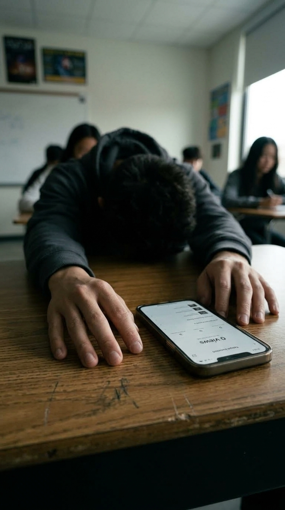
Cận cảnh (CU) 02.5s - 04.5s2. Hai cánh tay buông thõng trên mặt bàn
🎙️ "...Mở máy ra thấy đúng 3 lượt xem..."
| Cỡ cảnh: | Cận cảnh (CU) |
| Góc máy: | Góc nghiêng 20° |
| Hướng: | Dọc theo cánh tay |
💡 Góc máy dọc theo hai cánh tay buông xuôi bất lực trên mặt bàn gỗ, những ngón tay xòe ra không còn chút sức lực.
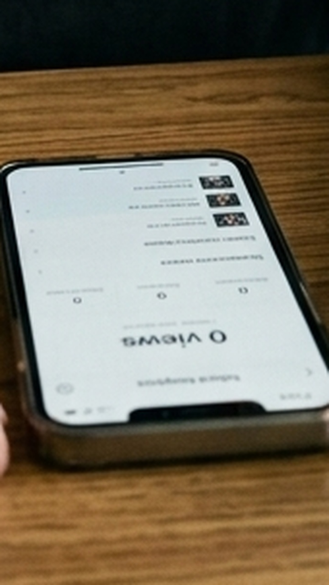
Đặc tả (Macro ECU) 04.5s - 07.0s3. Đặc tả màn hình hiển thị 0 Lượt xem
🎙️ "...trong đó có 2 lượt mình tự bấm..."
| Cỡ cảnh: | Đặc tả (Macro ECU) |
| Góc máy: | Thẳng đứng màn hình |
| Hướng: | Chính diện con số |
💡 Lấy nét căng vào dòng chữ '0 Lượt xem • 0 Bình luận' trơ trọi trên nền trắng của ứng dụng, sự thật phũ phàng.
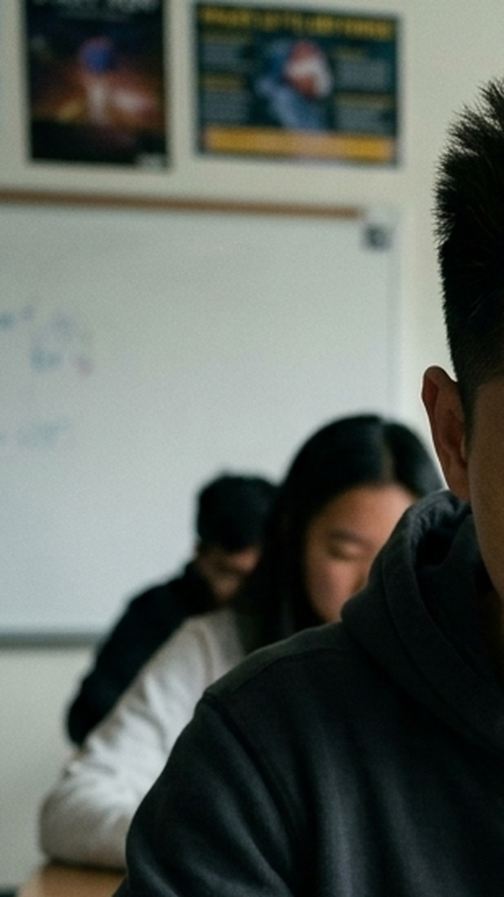
Góc cao (High Angle) 07.0s - 09.5s4. Không gian lớp học vắng lặng bao quanh
🎙️ "Lúc ấy mới hiểu: Nghề này..."
| Cỡ cảnh: | Góc cao (High Angle) |
| Góc máy: | Chúc 45° từ trên xuống |
| Hướng: | Toàn cảnh bàn học |
💡 Máy đặt trên cao nhìn xuống chiếc điện thoại nằm đơn độc giữa mặt bàn học rộng thênh thang, cảm giác lạc lõng cùng cực.
Cận cảnh khuôn mặt (CU)
09.5s - 12.0s
5. Khuôn mặt nghệt ra rồi khẽ lắc đầu
🎙️ "...không có chỗ cho kẻ há miệng chờ sung! 🌧️"
| Cỡ cảnh: | Cận cảnh khuôn mặt (CU) |
| Góc máy: | Ngang tầm mắt |
| Hướng: | Chính diện |
💡 Bắt trọn cái lắc đầu nhẹ, khóe môi khẽ nhếch cười tự giễu: 'Tốt lắm, coi như ăn một cái tát để tỉnh ngủ mà làm lại từ đầu!'
📍 3 Gợi Ý Bối Cảnh Quay Lại Ngoài Lớp Học:
- Cửa hàng vắng khách ngày mưa: Đứng tựa quầy thu ngân nhìn ra ngoài trời mưa tầm tã, không một bóng khách ghé vào.
- Bàn làm việc cuối tháng: Cầm tờ sao kê tài khoản hoặc hóa đơn tiền thuê mặt bằng, ánh mắt đờ đẫn nhìn vào khoảng không vô định.
- Băng ghế đá công viên: Ngồi nhìn xuống đôi giày dính bụi sau một ngày dài đi chào hàng nhưng toàn bị từ chối thẳng thừng.
Bài tập 08 • Lời thoại Voice-Over ngầm
"Tiếng ting ting nổ tin nhắn đầu tiên... giá trị nó chẳng đáng bao nhiêu tiền đâu. Nhưng nó đập tan mọi nỗi sợ trước đó: Phương pháp này có thật, và mình hoàn toàn làm được!"
🧠 BẢN ĐỒ TÂM LÝ HỌC (BÀI TẬP 08)
Tự hào, Nhẹ nhõm & Quả ngọt đầu tiên
Trang phục: Áo sơ mi kẻ caro nhã nhặn
Tầng 1 • Nói đãi bôi
"Mới được có một tin nhắn, có gì đâu mà phải mừng, phải tiền tỷ mới đáng nói."
Lý do bề nổi: cái cớ an toàn ai cũng nói được.
Tầng 2 • Cảm giác thật
"Màn hình điện thoại bất ngờ sáng bừng lên giữa giờ học, banner tin nhắn khách hỏi mua hàng hiện lên rõ mồn một."
Hành vi thật: thao tác lúng túng đời thường.
Tầng 2.5 • Thể diện người lớn
"Muốn nhảy cẫng lên ăn mừng nhưng sợ cả lớp nhìn bảo trẻ trâu, đành cắn chặt môi cố kìm nén nụ cười đắc chí."
Điểm nghẽn thể diện: sợ người ngoài chê cười, làm màu.
Tầng 3 • Tim đen ngượng miệng
"Sự thật ngượng miệng: suốt bao lâu nay luôn tự ti nghĩ mình bất tài vô dụng, khoảnh khắc này mới chính thức giải oan cho lòng tự trọng của bản thân."
Sự thật giấu kín: nỗi sợ và điểm nghẽn thực sự.
🎬 CHI TIẾT 5 CÚ MÁY BĂM NHỎ (BÀI TẬP 08)
Bấm vào ảnh để phóng to chi tiết
Trung cận (MCU)
00:00 - 02.5s
1. Ngồi thẳng lưng mắt dán vào màn hình sáng
🎙️ "Tiếng ting ting nổ tin nhắn đầu tiên..."
| Cỡ cảnh: | Trung cận (MCU) |
| Góc máy: | Ngang tầm mắt |
| Hướng: | Chếch 30° bên phải |
💡 Anh Việt trong áo sơ mi kẻ caro ngồi thẳng thớm, ánh mắt bỗng mở to ngạc nhiên nhìn chằm chằm vào chiếc điện thoại vừa rung lên.
Cận cảnh (CU)
02.5s - 04.5s
2. Hai bàn tay nâng vội chiếc điện thoại
🎙️ "...giá trị nó chẳng đáng bao nhiêu tiền đâu."
| Cỡ cảnh: | Cận cảnh (CU) |
| Góc máy: | Ngang ngực |
| Hướng: | Chính diện hai bàn tay |
💡 Cận cảnh hai bàn tay vội vã nhấc máy lên, ngón tay cái lướt nhẹ mở khóa màn hình với vẻ nâng niu trân trọng.
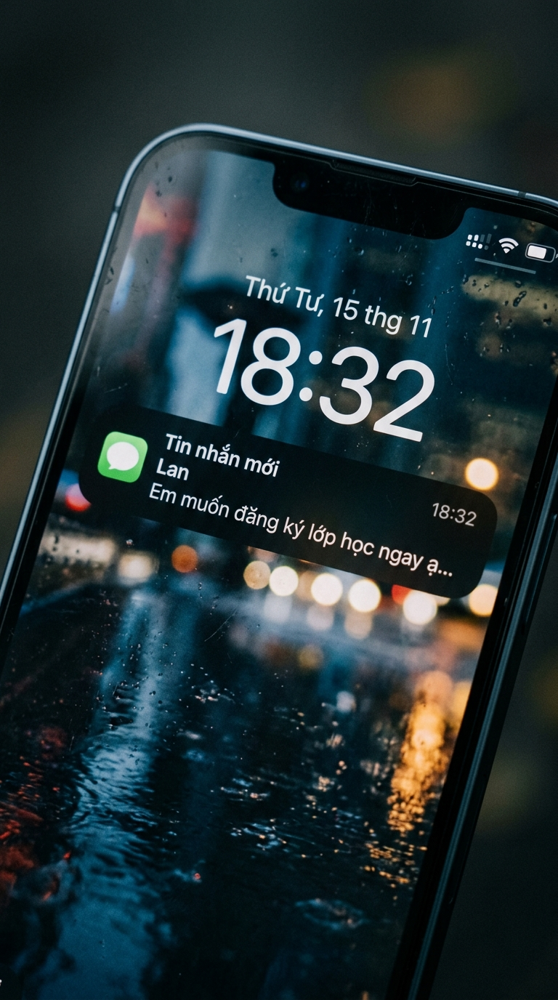
Đặc tả (Macro ECU) 04.5s - 07.0s3. Đặc tả banner tin nhắn khách hàng chốt đơn
🎙️ "Nhưng nó đập tan mọi nỗi sợ trước đó..."
| Cỡ cảnh: | Đặc tả (Macro ECU) |
| Góc máy: | Thẳng đứng màn hình |
| Hướng: | Lấy nét banner thông báo |
💡 Lấy nét căng vào dòng thông báo: 'New Customer Message: Em muốn đăng ký học ngay ạ...' nổi bật trên nền màn hình khóa.
Góc nhìn hai người (Two-shot)
07.0s - 09.5s
4. Xoay màn hình khoe bạn ngồi bên cạnh
🎙️ "Phương pháp này có thật..."
| Cỡ cảnh: | Góc nhìn hai người (Two-shot) |
| Góc máy: | Ngang vai |
| Hướng: | Lia sang bạn kế bên |
💡 Lia máy bắt khoảnh khắc anh Việt huých nhẹ vai bạn học bên cạnh, xoay chiếc điện thoại sang khoe: 'Này, có khách nhắn thật rồi!'
Cận cảnh khuôn mặt (CU)
09.5s - 12.0s
5. Nụ cười rạng rỡ nắm chặt tay ăn mừng
🎙️ "...và mình hoàn toàn làm được! 🎉"
| Cỡ cảnh: | Cận cảnh khuôn mặt (CU) |
| Góc máy: | Ngang tầm mắt hất nhẹ |
| Hướng: | Chính diện |
💡 Bắt trọn nụ cười rạng rỡ hạnh phúc, bàn tay nắm chặt kéo giật về phía sau theo phản xạ ăn mừng thầm lặng đầy kiêu hãnh.
📍 3 Gợi Ý Bối Cảnh Quay Lại Ngoài Lớp Học:
- Quán cà phê sáng sớm: Nghe tiếng chuông ting ting báo tiền về tài khoản, mỉm cười nhấc ly cà phê lên nhấp một ngụm đầy sảng khoái.
- Bàn đóng gói hàng tại nhà: Tự tay dán băng dính lên thùng hàng đầu tiên gửi đi cho khách, cẩn thận miết phẳng từng mép hộp carton.
- Góc ban công ngập nắng: Cầm điện thoại xem video của mình vừa cán mốc 10.000 view đầu tiên, gió lay nhẹ vạt áo, nụ cười tự hào bình dị.
Bài tập 09 • Lời thoại Voice-Over ngầm
"Cắt đi nửa giây thừa, kéo lại một nhịp thở... Người xem không biết bạn tỉ mỉ thế nào sau bàn dựng đâu. Nhưng họ sẽ ở lại trọn vẹn video, đơn giản vì không có một giây nào bị thừa thãi!"
🧠 BẢN ĐỒ TÂM LÝ HỌC (BÀI TẬP 09)
Tỉ mỉ, Cầu toàn & Tận tâm kỹ thuật
Trang phục: Áo thun đen tối giản + Tai nghe over-ear
Tầng 1 • Nói đãi bôi
"Dựng video cứ cắt bừa chèn hiệu ứng giật giật vào là người ta xem, quan tâm gì tiểu tiết."
Lý do bề nổi: cái cớ an toàn ai cũng nói được.
Tầng 2 • Cảm giác thật
"Đeo tai nghe kín mít, phóng to timeline lên từng khung hình 30fps, tua đi tua lại một đoạn thoại đúng 10 lần."
Hành vi thật: thao tác lúng túng đời thường.
Tầng 2.5 • Thể diện người lớn
"Cố tình đeo tai nghe xịn, ngồi gõ phím cành cạch để ra vẻ dân editor chuyên nghiệp giữa lớp học."
Điểm nghẽn thể diện: sợ người ngoài chê cười, làm màu.
Tầng 3 • Tim đen ngượng miệng
"Sự thật ngượng miệng: sợ bị chê là thợ cắt ghép thô thiển, sợ video của mình bị đánh giá là rẻ tiền nên phải soi từng mili-giây để tự bảo vệ lòng tự trọng nghề nghiệp."
Sự thật giấu kín: nỗi sợ và điểm nghẽn thực sự.
🎬 CHI TIẾT 5 CÚ MÁY BĂM NHỎ (BÀI TẬP 09)
Bấm vào ảnh để phóng to chi tiết Trung cận (MCU)
00:00 - 02.5s
Trung cận (MCU)
00:00 - 02.5s
1. Ngồi chăm chú bên laptop và tai nghe chụp tai
🎙️ "Cắt đi nửa giây thừa, kéo lại một nhịp thở..."
| Cỡ cảnh: | Trung cận (MCU) |
| Góc máy: | Ngang tầm mắt |
| Hướng: | Chếch 45° bên trái |
💡 Bắt trọn thần thái tập trung cao độ của anh Việt với chiếc tai nghe Sony trùm đầu, màn hình laptop hiển thị giao diện dựng phim chuyên nghiệp.
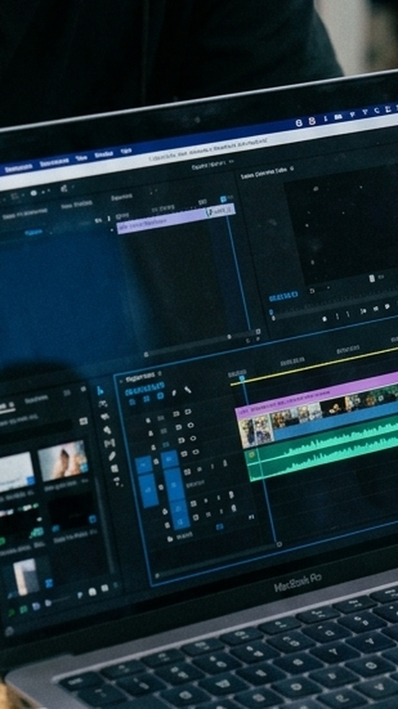
Cận cảnh (CU) 02.5s - 04.5s2. Màn hình laptop với timeline nhiều layer
🎙️ "...Người xem không biết bạn tỉ mỉ thế nào..."
| Cỡ cảnh: | Cận cảnh (CU) |
| Góc máy: | Ngang bàn phím |
| Hướng: | Chếch nhìn màn hình |
💡 Lấy nét vào màn hình MacBook hiển thị timeline CapCut với các dải màu tím, xanh lá của âm thanh và video được cắt gọt tinh xảo.
Đặc tả (Macro ECU)
04.5s - 07.0s
3. Đặc tả ngón tay bấm phím cắt đúp thừa
🎙️ "...sau bàn dựng đâu..."
| Cỡ cảnh: | Đặc tả (Macro ECU) |
| Góc máy: | Góc cao 60° |
| Hướng: | Chính diện bàn phím |
💡 Khóa nét ngón trỏ và ngón cái nhấn tổ hợp phím Command + B, nhát cắt sắc lẹm chia đôi đoạn video thừa thãi trên timeline.
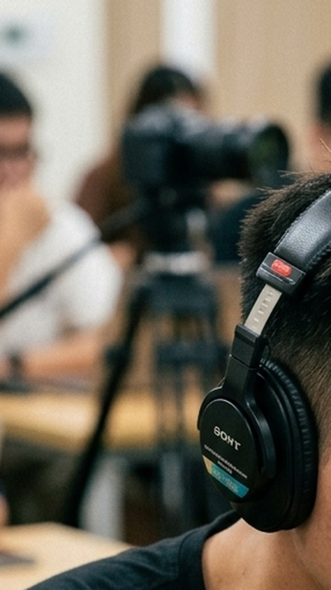
Cận cảnh ánh mắt (CU Eyes) 07.0s - 09.5s4. Ánh mắt tập trung soi chuyển động từng frame
🎙️ "Nhưng họ sẽ ở lại trọn vẹn video..."
| Cỡ cảnh: | Cận cảnh ánh mắt (CU Eyes) |
| Góc máy: | Ngang tầm mắt |
| Hướng: | Chính diện |
💡 Cận cảnh đôi mắt chăm chú phản chiếu ánh sáng nhấp nháy từ màn hình máy tính, lông mày giãn nhẹ khi tìm đúng điểm nối cảnh raccord.
Góc thấp (Low Angle)
09.5s - 12.0s
5. Gật gù nhịp chân theo tiếng nhạc nền
🎙️ "...vì không có một giây nào bị thừa thãi! 🎧"
| Cỡ cảnh: | Góc thấp (Low Angle) |
| Góc máy: | Sát mặt bàn hất lên |
| Hướng: | Chếch 30° |
💡 Bắt cử chỉ gật gù hài lòng theo nhịp điệu âm thanh trong tai nghe, ngón tay gõ nhẹ lên mép máy tính báo hiệu một đúp dựng hoàn hảo.
📍 3 Gợi Ý Bối Cảnh Quay Lại Ngoài Lớp Học:
- Phòng dựng phim tại nhà ban đêm: Ngồi trước màn hình đôi 27 inch trong phòng tối, bàn phím cơ phát sáng lung linh, tay lia chuột mượt mà.
- Quán cà phê yên tĩnh: Ngồi góc bàn dài, cắm tai nghe vào laptop cặm cụi dựng video giữa tiếng nhạc nền du dương của quán.
- Băng ghế chờ sân bay: Mở laptop tranh thủ render nốt video trước giờ lên máy bay, ánh mắt chạy đua với thời gian.
Bài tập 10 • Lời thoại Voice-Over ngầm
"Ngồi một mình thì tưởng ý tưởng của mình là nhất. Đến lúc đem ra bàn luận với anh em, người ta bóc cho vài câu mới thấy hổng toe toét. Nhưng có cọ xát thì mới gọt sắc được thông điệp!"
🧠 BẢN ĐỒ TÂM LÝ HỌC (BÀI TẬP 10)
Va chạm quan điểm & Tinh thần đồng đội
Trang phục: Áo blazer linen trẻ trung
Tầng 1 • Nói đãi bôi
"Ý tưởng của em độc quyền, em không muốn chia sẻ vì sợ bị người khác sao chép."
Lý do bề nổi: cái cớ an toàn ai cũng nói được.
Tầng 2 • Cảm giác thật
"Mấy anh em chụm đầu vào nhau quanh bàn học, ngón tay chỉ lia lịa vào từng dòng chữ, cãi nhau chí choé về đoạn mở đầu."
Hành vi thật: thao tác lúng túng đời thường.
Tầng 2.5 • Thể diện người lớn
"Ban đầu gồng lên bảo vệ ý kiến của mình vì sợ nhận sai trước mặt mọi người, nhưng trong bụng biết thừa luận điểm của bạn có lý hơn."
Điểm nghẽn thể diện: sợ người ngoài chê cười, làm màu.
Tầng 3 • Tim đen ngượng miệng
"Sự thật ngượng miệng: cái tôi bảo thủ, sợ bị bóc mẽ là tư duy non nớt; nhưng khi dám mở lòng lắng nghe thì mới vỡ lẽ ra bao nhiêu điều hay ho."
Sự thật giấu kín: nỗi sợ và điểm nghẽn thực sự.
🎬 CHI TIẾT 5 CÚ MÁY BĂM NHỎ (BÀI TẬP 10)
Bấm vào ảnh để phóng to chi tiết
Trung cảnh (MCU)
00:00 - 02.5s
1. Cúi người đứng chỉ tay vào trang kịch bản
🎙️ "Ngồi một mình thì tưởng ý tưởng của mình là nhất."
| Cỡ cảnh: | Trung cảnh (MCU) |
| Góc máy: | Ngang ngực |
| Hướng: | Chếch 35° giữa hai người |
💡 Anh Việt trong chiếc áo blazer linen cúi người trên bàn học, tay chỉ thẳng vào trang giấy kịch bản đang mở sẵn trước mặt bạn học.
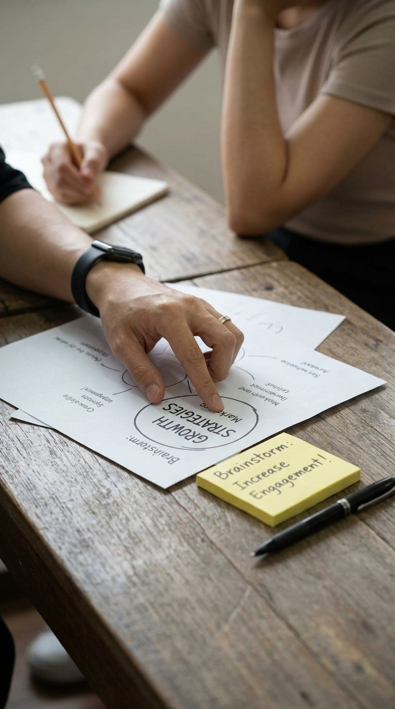
Cận cảnh (CU) 02.5s - 04.5s2. Bàn tay chỉ vào dòng chữ gạch đầu dòng
🎙️ "Đến lúc đem ra bàn luận với anh em..."
| Cỡ cảnh: | Cận cảnh (CU) |
| Góc máy: | Góc nghiêng 45° |
| Hướng: | Mặt bàn học |
💡 Dí sát camera bắt ngón tay trỏ đang gõ nhẹ vào một dòng chữ chìa khóa, bạn ngồi bên cạnh cũng đặt tay lên mép vở lắng nghe.
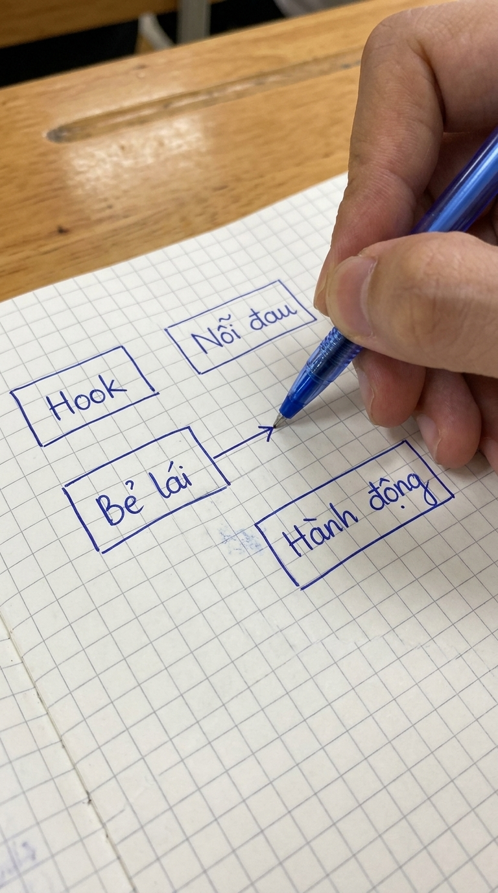
Đặc tả (Macro ECU) 04.5s - 07.0s3. Đặc tả nét vẽ sơ đồ 4 bước trên giấy
🎙️ "...người ta bóc cho vài câu mới thấy hổng toe toét..."
| Cỡ cảnh: | Đặc tả (Macro ECU) |
| Góc máy: | Thẳng đứng 80° |
| Hướng: | Chính diện trang sổ |
💡 Lấy nét căng vào sơ đồ mũi tên vẽ tay nối các ô 'Hook ➔ Nỗi đau ➔ Bẻ lái ➔ Hành động' đầy sống động trên trang giấy kẻ ô.
Góc hai người (Two-shot)
07.0s - 09.5s
4. Góc nhìn hai khuôn mặt cùng hướng về một điểm
🎙️ "Nhưng có cọ xát..."
| Cỡ cảnh: | Góc hai người (Two-shot) |
| Góc máy: | Ngang cằm |
| Hướng: | Bắt tương tác hai bên |
💡 Bắt biểu cảm của bạn học đang gật gù ngẫm nghĩ, đối chiếu với nụ cười cởi mở đầy năng lượng của anh Việt đang giải thích.
Góc thấp (Low Angle)
09.5s - 12.0s
5. Đập tay tán thưởng chốt xong phương án
🎙️ "...thì mới gọt sắc được thông điệp! 🤝"
| Cỡ cảnh: | Góc thấp (Low Angle) |
| Góc máy: | Hất lên từ mép bàn |
| Hướng: | Chính diện |
💡 Bắt trọn khoảnh khắc hai bàn tay đập nhẹ vào nhau (High-five) trên mặt bàn, nụ cười đồng thuận rạng rỡ: 'Chốt kịch bản này, bao cuốn!'
📍 3 Gợi Ý Bối Cảnh Quay Lại Ngoài Lớp Học:
- Phòng họp brainstorm công ty: Đứng trước tấm bảng kính vẽ đầy sơ đồ mindmap, cùng đồng nghiệp tranh luận về chiến dịch ra mắt sản phẩm.
- Bàn tròn quán trà sữa / cafe: 3-4 bạn trẻ ngồi quây quần cùng chiếc laptop, vừa ăn bánh vừa hào hứng vẽ storyboard lên khăn giấy.
- Góc ban công thảo luận ngoài trời: Hai người đứng tựa lan can, một người cầm kịch bản đọc to, người kia góp ý từng câu thoại.
Bài tập 11 • Lời thoại Voice-Over ngầm
"Đứng trước ống kính mà run như cầy sấy thì ai cũng từng trải qua. Nhưng nuốt nước bọt một cái, nhìn thẳng vào mắt camera và mở lời... Qua được đúp quay đầu tiên này là bạn đã thắng 90% người ngoài kia rồi!"
🧠 BẢN ĐỒ TÂM LÝ HỌC (BÀI TẬP 11)
Vượt qua nỗi sợ & Can đảm trước đám đông
Trang phục: Áo sơ mi trắng cổ bẻ lịch thiệp
Tầng 1 • Nói đãi bôi
"Em là người hướng nội, em chỉ hợp làm nội dung dạng chữ chứ không bao giờ đứng nói trước ống kính được."
Lý do bề nổi: cái cớ an toàn ai cũng nói được.
Tầng 2 • Cảm giác thật
"Đứng trước chiếc điện thoại gắn trên chân máy mini, cổ họng nghẹn ứ, hai tay nắm chặt mép bàn học, nuốt nước bọt ừng ực."
Hành vi thật: thao tác lúng túng đời thường.
Tầng 2.5 • Thể diện người lớn
"Cố gắng tỏ ra đĩnh đạc tự tin trước mặt các bạn trong lớp, nhưng tim đập thình thịch như muốn nhảy ra khỏi lồng ngực."
Điểm nghẽn thể diện: sợ người ngoài chê cười, làm màu.
Tầng 3 • Tim đen ngượng miệng
"Sự thật ngượng miệng: sợ bị chê là mặt đơ, giọng nói quê mùa, sợ người quen nhìn thấy sẽ cười cợt sau lưng mình."
Sự thật giấu kín: nỗi sợ và điểm nghẽn thực sự.
🎬 CHI TIẾT 5 CÚ MÁY BĂM NHỎ (BÀI TẬP 11)
Bấm vào ảnh để phóng to chi tiết Trung cảnh (MCU)
00:00 - 02.5s
Trung cảnh (MCU)
00:00 - 02.5s
1. Đứng cạnh bảng trắng đối diện chân máy phone
🎙️ "Đứng trước ống kính mà run như cầy sấy thì ai cũng từng trải qua."
| Cỡ cảnh: | Trung cảnh (MCU) |
| Góc máy: | Ngang ngực |
| Hướng: | Chếch 30° trực diện |
💡 Anh Việt trong chiếc áo sơ mi trắng tinh tươm đứng bên bảng lớp học, hai tay mở nhẹ với cử chỉ tự nhiên, đối diện chiếc điện thoại kẹp tripod.
 Cận cảnh (CU)
02.5s - 04.5s
Cận cảnh (CU)
02.5s - 04.5s
2. Chiếc điện thoại kẹp ngay ngắn trên tripod mini
🎙️ "Nhưng nuốt nước bọt một cái..."
| Cỡ cảnh: | Cận cảnh (CU) |
| Góc máy: | Ngang mặt bàn |
| Hướng: | Chính diện chân máy |
💡 Lấy nét căng vào chiếc chân máy tripod 3 chân nhỏ gọn đặt vững chãi trên mặt bàn, kẹp chiếc điện thoại đang ở chế độ chờ.
 Đặc tả (Macro ECU)
04.5s - 07.0s
Đặc tả (Macro ECU)
04.5s - 07.0s
3. Đặc tả camera điện thoại đếm ngược 3... 2... 1
🎙️ "...nhìn thẳng vào mắt camera và mở lời..."
| Cỡ cảnh: | Đặc tả (Macro ECU) |
| Góc máy: | Ngang ống kính |
| Hướng: | Chĩa thẳng mắt camera |
💡 Khóa nét vào cụm mắt camera điện thoại phản chiếu ánh sáng phòng học, chấm đèn đỏ nhấp nháy báo hiệu chuẩn bị ghi hình.
 Góc toàn qua vai (Wide OTS)
07.0s - 09.5s
Góc toàn qua vai (Wide OTS)
07.0s - 09.5s
4. Không gian phòng học nhìn từ bục giảng
🎙️ "Qua được đúp quay đầu tiên này..."
| Cỡ cảnh: | Góc toàn qua vai (Wide OTS) |
| Góc máy: | Từ sau vai người nói |
| Hướng: | Hướng xuống lớp học |
💡 Góc nhìn từ sau lưng nhân vật bao quát các dãy bàn học và các bạn sinh viên đang chăm chú dõi theo, không gian rộng mở.
 Cận cảnh khuôn mặt (CU)
09.5s - 12.0s
Cận cảnh khuôn mặt (CU)
09.5s - 12.0s
5. Thở phào nhẹ nhõm mỉm cười tự tin
🎙️ "...là bạn đã thắng 90% người ngoài kia rồi! 🎙️"
| Cỡ cảnh: | Cận cảnh khuôn mặt (CU) |
| Góc máy: | Ngang tầm mắt |
| Hướng: | Chính diện |
💡 Bắt trọn nụ cười bừng sáng và hơi thở phào nhẹ nhõm của anh Việt ngay sau khi hoàn thành đúp nói: 'Thấy chưa, có chết ai đâu!'
📍 3 Gợi Ý Bối Cảnh Quay Lại Ngoài Lớp Học:
- Phòng khách tại nhà tự quay: Đứng trước góc tường trắng phòng khách, tự bấm máy quay clip chia sẻ kinh nghiệm đầu tiên trong đời.
- Hội trường / Sân khấu nhỏ: Đứng trên bục phát biểu cầm micro, nhìn xuống hàng ghế khán giả và tự tin chia sẻ câu chuyện của mình.
- Góc vườn / Công viên ngoài trời: Cầm gậy selfie đi dạo vừa đi vừa nói chuyện với camera một cách tự nhiên như tâm sự với bạn hiền.
Bài tập 12 • Lời thoại Voice-Over ngầm
"Học xong một buổi, đầu nảy số hàng tá ý tưởng. Gập máy lại, bước ra khỏi phòng học... Giờ không còn là bài tập trên lớp nữa, mà là bước ra ngoài đời để tự tay làm ra kết quả thật!"
🧠 BẢN ĐỒ TÂM LÝ HỌC (BÀI TẬP 12)
Giải phóng, Tự tin & Sẵn sàng thực chiến
Trang phục: Áo gió thể thao / Bomber jacket năng động
Tầng 1 • Nói đãi bôi
"Học xong khóa học này là mình thành bậc thầy làm video rồi, ngồi chờ tiền tự chảy về túi."
Lý do bề nổi: cái cớ an toàn ai cũng nói được.
Tầng 2 • Cảm giác thật
"Thu dọn sổ bút, gập chiếc laptop lại, khoác chiếc balo lên vai, hít một hơi thật sâu chào các bạn rồi bước ra cửa."
Hành vi thật: thao tác lúng túng đời thường.
Tầng 2.5 • Thể diện người lớn
"Hết giờ học cảm thấy người nhẹ nhõm hẳn vì không còn phải chịu áp lực bài vở, nhưng trong lòng bắt đầu le lói cảm giác sốt ruột muốn về làm thử ngay."
Điểm nghẽn thể diện: sợ người ngoài chê cười, làm màu.
Tầng 3 • Tim đen ngượng miệng
"Sự thật ngượng miệng: hiểu rằng kiến thức trong lớp chỉ là 10%, nếu về nhà không chịu cầm máy lên làm thì mãi mãi chỉ là kẻ nói phét lý thuyết suông."
Sự thật giấu kín: nỗi sợ và điểm nghẽn thực sự.
🎬 CHI TIẾT 5 CÚ MÁY BĂM NHỎ (BÀI TẬP 12)
Bấm vào ảnh để phóng to chi tiết Trung cảnh (MCU)
00:00 - 02.5s
Trung cảnh (MCU)
00:00 - 02.5s
1. Đứng bên cánh cửa lớp khoác balo trên vai
🎙️ "Học xong một buổi, đầu nảy số hàng tá ý tưởng."
| Cỡ cảnh: | Trung cảnh (MCU) |
| Góc máy: | Ngang ngực |
| Hướng: | Chếch 30° khung cửa |
💡 Anh Việt trong chiếc áo gió thể thao năng động, một bên vai đeo chiếc balo đen, đứng ngay mép cửa lớp học với ánh mắt hướng về phía trước.
Cận cảnh (CU)
02.5s - 04.5s
2. Bàn tay gập nắp laptop MacBook êm ái
🎙️ "Gập máy lại..."
| Cỡ cảnh: | Cận cảnh (CU) |
| Góc máy: | Ngang mép bàn |
| Hướng: | Chính diện bàn tay |
💡 Lấy nét vào bàn tay đặt lên góc trên nắp máy tính, hạ nhẹ nắp màn hình xuống nghe tiếng 'tách' hít nam châm quen thuộc.
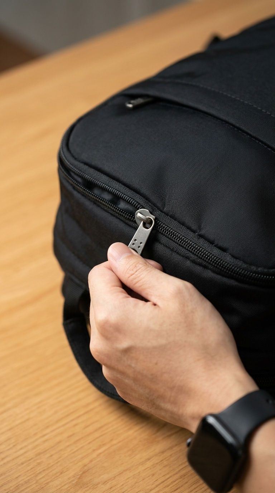
Đặc tả (Macro ECU) 04.5s - 07.0s3. Đặc tả chiếc khóa kéo balo được kéo gọn gàng
🎙️ "...bước ra khỏi phòng học..."
| Cỡ cảnh: | Đặc tả (Macro ECU) |
| Góc máy: | Ngang thân balo |
| Hướng: | Chính diện đường khóa |
💡 Dí sát camera bắt ngón tay kéo dứt khoát chiếc khóa kéo kim loại trên chiếc balo đen, đóng gói trọn vẹn đồ đạc tác nghiệp.
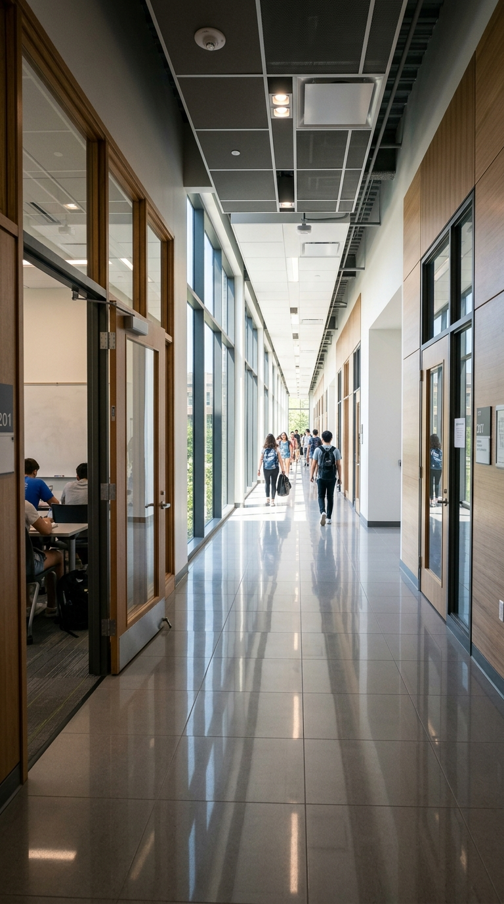
Góc nhìn phối cảnh (POV/Wide) 07.0s - 09.5s4. Dãy hành lang lớp học ngập tràn ánh sáng
🎙️ "Giờ không còn là bài tập trên lớp nữa..."
| Cỡ cảnh: | Góc nhìn phối cảnh (POV/Wide) |
| Góc máy: | Ngang tầm mắt |
| Hướng: | Hướng ra hành lang |
💡 Khung cảnh hành lang trường học dài thênh thang ngập nắng ban ngày, mở ra không gian rộng lớn của đời thực.
Trung cận (MCU)
09.5s - 12.0s
5. Quay đầu lại mỉm cười vẫy tay chào tạm biệt
🎙️ "...mà là bước ra ngoài đời để tự tay làm ra kết quả thật! 🚀"
| Cỡ cảnh: | Trung cận (MCU) |
| Góc máy: | Ngang tầm mắt |
| Hướng: | Nhìn lại ống kính |
💡 Anh Việt quay nửa người lại, nở nụ cười hào sảng, vẫy tay chào lớp học đầy năng lượng rồi sải bước tiến về phía trước.
📍 3 Gợi Ý Bối Cảnh Quay Lại Ngoài Lớp Học:
- Rời khỏi quán cà phê sau buổi làm việc: Đứng dậy đeo túi, cầm cốc nước trả quầy rồi bước ra đường phố tấp nập trong ánh chiều buông.
- Cửa thang máy tòa nhà văn phòng: Bước vào thang máy bấm nút xuống tầng hầm, ngắm nhìn hình ảnh mình tràn đầy quyết tâm trong gương thang máy.
- Sải bước trên cầu vượt bộ hành: Đeo tai nghe, sải bước dài trên cầu vượt nhìn xuống dòng xe cộ hối hả, tâm thế sẵn sàng chinh phục mục tiêu mới.